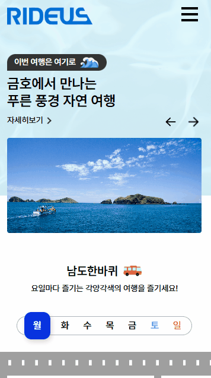
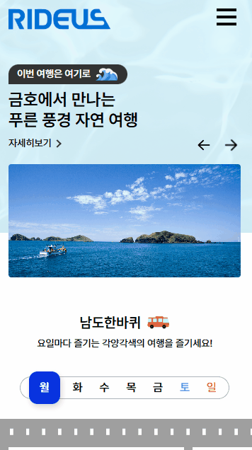
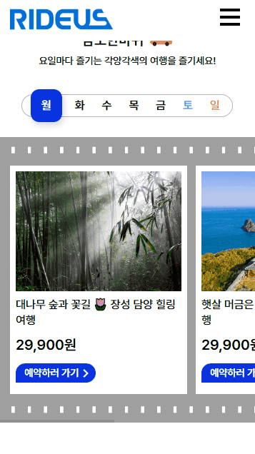
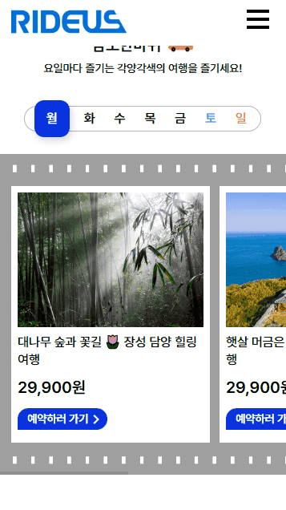

라이더스
금호고속 랜딩
https://rideus.net/page/kumhotour-main
기간
2025.03 - 2025.04
참여도
80%
담당
퍼블리싱 & UI기획 : 관광상품 섹션별 내용과 레퍼런스 찾기 등 기획 참여, 마크업과 스타일링 인터랙션 구현.
사용스킬
HTML, CSS, JQUERY
1프로젝트 개요
금호고속 관관 상품의 프로모션 영역과 요일별 상품 섹션을 개편하는 작업에 참여하였습니다. jQuery 없이 순수 JavaScript와 HTML/CSS로 마크업 및 동적 기능을 구현하였으며, 반응형 웹 환경에서 사용자 경험을 개선하는 데 중점을 두었습니다.
2주요 구현 내용
 

순수 JavaScript로 화살표 버튼과 드래그 시 슬라이드 이동과 슬라이드별 배경을 바꾸는 기능을 구현하였습니다. 그리고 마지막 슬라이드와 첫 슬라이드 이동시 방향이 돌아가지 않고, 다음 슬라이드 이동 처럼 보일 수 있도록 하였습니다.
 

PC 환경은 Swiper를 사용하여 요일을 pagination을 커스텀하여 각 요일별 상품 슬라이드로 이동하게 하였습니다. 모바일에서는 각 상품 박스에 overflow-x를 넣어서 상품을 보일 수 있게 하기 위해, swiper사용대신 javaScript로 탭기능을 구현하여 반응형에 대응하였습니다.
javsScript로 탭 기능을로 탭 별 상품이 보일 수 있도록 과, 각 탭의 컨텐츠 박스 배경이 바뀔 수 있도록 구현하였습니다.
3작업 중 어려움 & 해결법
문제 슬라이더 구현 초기에 마지막 슬라이드에서 첫 슬라이드로 이동할 때 방향이 반대로 전환되어 사용자 경험이 불편하다는 피드백이 있었습니다.
해결 JavaScript 로직을 수정하여 항상 동일한 방향으로 순환되도록 개선. 추가로 애니메이션 속도 및 전환 효과를 조정하여 더욱 자연스러운 사용자 경험 제공하였습니다.
4결과 및 성과
JavaScript만으로도 jQuery 없이 인터랙티브한 UI 구현 가능함을 입증
슬라이드와 탭 UI 모두 크로스브라우징 및 반응형 환경에서 정상 작동
유지보수성과 확장성이 높은 코드 구조를 적용하여 차후 기능 추가 시 용이함
디자이너와 기획자로부터 사용자 경험 개선에 대한 긍정적 피드백 수렴
5링크